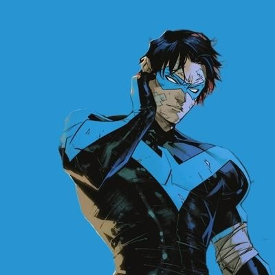
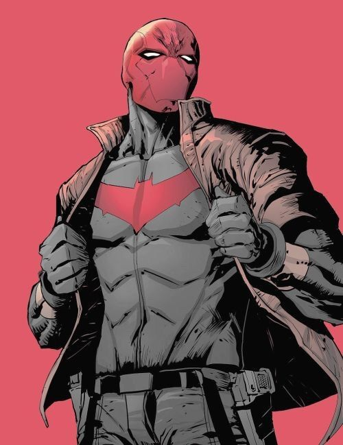
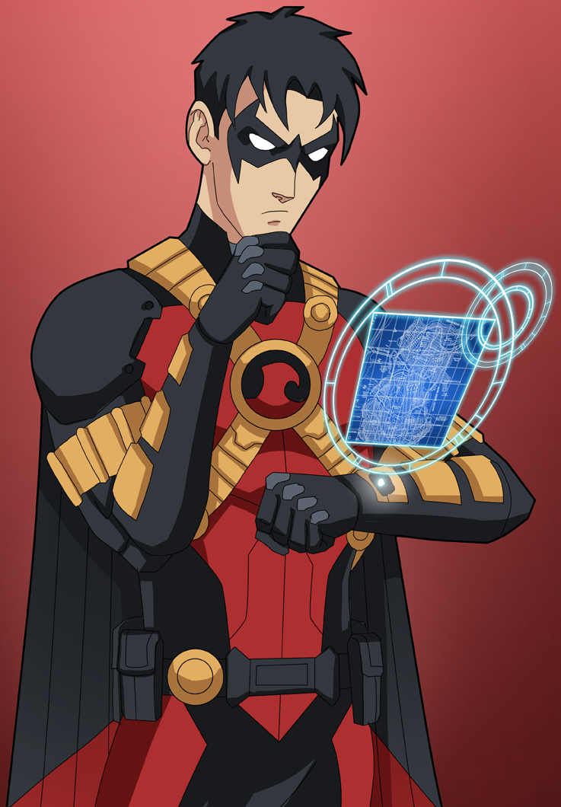
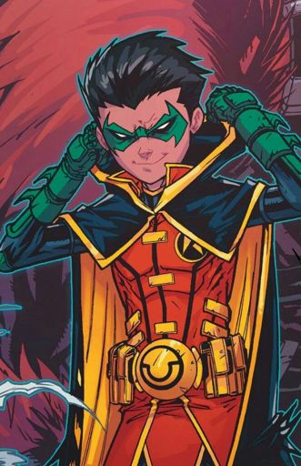

Dick Grayson

Dick Grayson, o primeiro Robin e Asa Noturna, é um dos personagens mais importantes do universo Batman. Sua história é marcada por heroísmo, resiliência e constante evolução.
Origens
Dick Grayson era um jovem acrobata que, junto com sua família, formava os "Graysons Voadores". Uma noite, durante uma apresentação, seus pais foram assassinados pelo mafioso Tony Zucco. Presenciando a tragédia, Bruce Wayne, o Batman, decidiu adotar Dick e treiná-lo para se tornar seu parceiro na luta contra o crime.
Robin
Ao lado de Batman, Dick Grayson se tornou o primeiro Robin, símbolo de esperança e heroísmo para Gotham City. Sua agilidade, inteligência e espírito aventureiro o tornaram um parceiro essencial para o Cavaleiro das Trevas.
Asa Noturna
Com o passar dos anos, Dick Grayson decidiu seguir seu próprio caminho e se tornar um herói independente. Adotando a identidade de Asa Noturna, ele se consolidou como um líder nato e símbolo de justiça.
Jason Todd

Diferente do primeiro Robin, Dick Grayson, a infância de Jason foi marcada pela pobreza. Seus pais, acrobatas de circo, foram assassinados pelo vilão Crocodilo. Bruce Wayne, comovido pela tragédia, adotou Jason.
Tornando-se Robin
Motivado pelo desejo de superar a dor e inspirado por Batman, Jason treinou arduamente para se tornar o segundo Robin. Impulsivo e rebelde, ele contrastava com a personalidade mais controlada de Dick Grayson.
Morte Controversa
Em uma história polêmica de 1988, os fãs tiveram a chance de votar pelo destino de Jason Todd através de um número telefônico. Infelizmente, a votação determinou a morte de Jason pelas mãos do Coringa. A morte brutal e violenta de Jason marcou profundamente a história do Batman e impactou a Família Bat por anos.
Retorno Violento
Anos depois, Jason foi revivido pela Lazarus Pit, um artefato místico com o poder de ressuscitar os mortos. No entanto, a ressurreição trouxe consequências. Jason sofria de traumas psicológicos e guardava um profundo rancor contra Batman por não o vingar do Coringa.
Capuz Vermelho
Abraçando a fúria e a violência, Jason adotou a persona do Capuz Vermelho, um anti-herói que opera fora da lei. Suas ações brutais e métodos punitivos o colocam em constante conflito com Batman e a Família Bat.
Evolução e Redenção
Apesar de seu passado sombrio, Jason tem demonstrado momentos de redenção ao longo dos anos. Ele ocasionalmente colabora com a Família Bat e luta contra ameaças maiores. Seu código moral pode ser diferente do de Batman, mas ele continua a ser um personagem importante e complexo no Universo DC.
Tim Drake

Tim Drake, o terceiro Robin e eventualmente Red Robin, é um personagem conhecido por sua inteligência estratégica e pelo profundo conhecimento do Universo DC. Sua jornada como herói é marcada por dedução, determinação e o peso do legado.
Origens e Motivação
Ao contrário dos Robins anteriores, Tim Drake não era um acrobata órfão. Era um jovem prodígio com vasto conhecimento do Batman e seus inimigos. Ao deduzir a identidade secreta de Batman e Robin (Dick Grayson na época), Tim procurou Bruce Wayne para convencê-lo de que precisava de um novo parceiro. Impressionado pela inteligência e dedução de Tim, Bruce o acolheu como o terceiro Robin.
Tornando-se Red Robin
Após a aparente morte de Bruce Wayne, Tim Drake não quis seguir Dick Grayson como o novo Batman. Sentindo que precisava seguir seu próprio caminho, adotou a identidade de Red Robin.
Damian Wayne

Damian Wayne, o quarto Robin e ocasionalmente conhecido como Damian al Ghul, é um personagem complexo e controverso do universo Batman. Sua história é marcada por um treinamento brutal, arrogância, mas também por um profundo desejo de se tornar um herói.
Origens Conturbadas
Damian é filho biológico de Bruce Wayne e Talia al Ghul, líder da Liga dos Assassinos. Criado e treinado pela Liga desde a infância, Damian foi doutrinado na arte do assassinato e desenvolveu uma visão brutal de justiça.
Entrada na Família Bat
Inicialmente hostil a Bruce Wayne, Damian foi forçado a se adaptar à vida em Gotham City após Talia ser aparentemente morta. Seu intenso treinamento e habilidades de combate levaram Bruce a treiná-lo como o novo Robin, apesar de sua personalidade arrogante e rebelde.
Evolução e Redenção
Apesar dos conflitos iniciais, Damian começa a se importar com a Família Bat e a entender o verdadeiro significado de ser um herói. Ele aprende a controlar sua raiva e a lutar pela justiça de forma não letal.